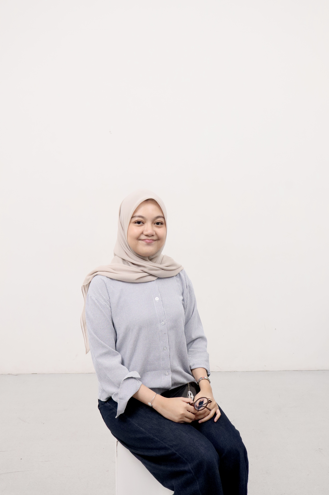

BINUS University
Bachelor of Computer Science
- Specialization
- Database Technology
- GPA
- 3.30 / 4.00
- Relevant coursework
- Database Systems · Data Engineering · Data Analytics · Web Application Development · Software Engineering
Portfolio / 2026
A collection of projects across data, databases, visual analytics, and digital experiences.
CURIOUS THINKING ✦ STRUCTURED PROBLEM-SOLVING ✦ CLEAR COMMUNICATION ✦ THOUGHTFUL COLLABORATION ✦ CONTINUOUS LEARNING ✦
About / 01

I’m interested in how well-structured data can become useful systems, clearer insights, and practical solutions.
Through academic and collaborative projects, I’m building experience in data work, visual storytelling, and web-based systems. I enjoy working carefully, learning from real problems, and contributing thoughtfully as part of a team.
Education / 02
Bachelor of Computer Science
Projects / 03
Toolkit / 04


Python · SQL · MySQL · Power BI · Tableau · Pentaho · Apache Airflow · Apache Spark · PySpark
Python · R · Java · C++ · HTML/CSS · JavaScript
Figma · Excel · Jupyter Notebook · Google Colab · VS Code · RStudio · Git · GitHub
Indonesian (native) · English (conversational)
Experience / 05
Self-employed · Jakarta
Managing customer orders end-to-end, from product sourcing and payment coordination to communication and delivery arrangements.
Student Support, BINUS University · Volunteer
Supporting first-year students as they adapt to university life, academic activities, and the campus environment.
HIMTI, BINUS University
Collaborating on content and promotional activities for student association programs and events.
SMATION 2023 · Fit Out Cup Vol. 1 & 2 · Student Council
Coordinating documentation, event administration, publication, and cross-division preparation for student activities.
Contact / 06